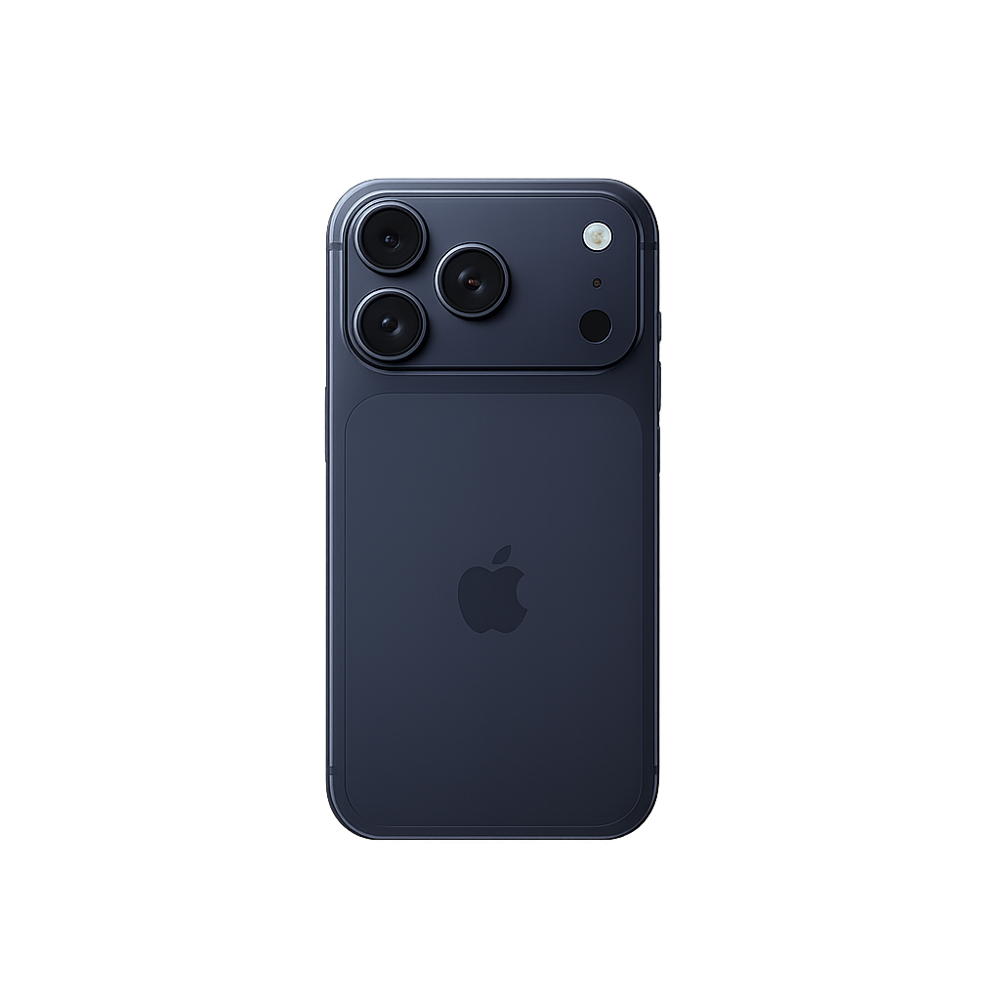

This is a simple website for showcasing our products.
Try our latest model today!

Iphone 17 Pro
Iphone 17 Pro
Iphone 17 Pro
Iphone And Mac
With iPhone Mirroring, you can view your iPhone screen on your Mac and control it without picking up your phone. Continuity features also let you answer calls or messages right from your Mac. You can even copy images, video, or text from your iPhone and paste it all into a different app on your Mac. And with iCloud, you can access your files from either device.